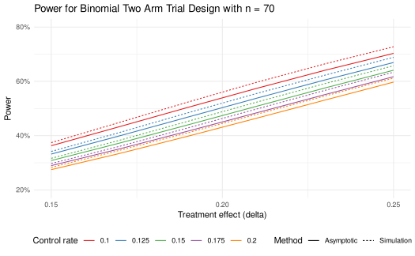

Binomial two arm trial design and analysis
Source:vignettes/binomialTwoSample.Rmd
binomialTwoSample.RmdOverview and notation
This vignette provides an overview of the binomial two arm trial design and analysis. We consider designs for superiority, non-inferiority, and super-superiority trials. These can reflect binary endpoints measuring successful outcomes (e.g., response) or unsuccessful outcomes (e.g., failure). We focus here on risk-difference and fixed (not group sequential) designs to limit the scope. Both risk ratio and odds ratio are also available in the package as outlined in Miettinen and Nurminen (1985).
The basic method for computing the fixed sample size that is the basis for group sequential design sizes for superiority was developed by Fleiss et al. (1980), but is applied here without the continuity correction as recommended by Gordon and Watson (1996). This method was extended to non-inferiority and super-superiority trials by Farrington and Manning (1990).
We will see that while asymptotic formulations are generally good approximations, fast simulation methods can provide more accurate results both for Type I error and power.
The R packages we use are:
Sample size
The rate arguments in nBinomial() are p1
and p2. p1 is the rate in group 1 and
p2 is the rate in group 2. For a simple example, we can
compute the sample size for a superiority design with a 2:1 sample size
ratio where the experimental and control groups have assumed success
rates of 0.2 and 0.1, respectively. One-sided Type I error is 0.025 and
Type II error is 0.15 (power is 85%). This gives the same result if the
roles of p1 and p2 are changed and
ratio is inverted.
nBinomial(p1 = 0.2, p2 = 0.1, ratio = 2, alpha = 0.025, beta = 0.15) |> ceiling()
#> [1] 496
nBinomial(p1 = 0.1, p2 = 0.2, ratio = 0.5, alpha = 0.025, beta = 0.15) |> ceiling()
#> [1] 496The above results apply as well to a failure endpoint, but now 0.2
would be the control group rate and 0.1 would be the experimental group
rate. Results can also be computed using the risk-ratio and odds-ratio
methods of Miettinen and Nurminen (1985).
For 2:1 randomization (Experimental:Control) we set
ratio = 0.5 since group 1 represents the control group in
the following. We see the results are the same for the risk-ratio method
as the risk-difference method from above (default
scale = "Difference"). For the odds-ratio method, we see
the sample size is larger in this case.
scale <- c("Difference", "RR", "OR")
tibble(scale, "Sample size" = c(
nBinomial(p1 = 0.2, p2 = 0.1, ratio = 0.5, alpha = 0.025, beta = 0.15, scale = scale[1]) |> ceiling(),
nBinomial(p1 = 0.2, p2 = 0.1, ratio = 0.5, alpha = 0.025, beta = 0.15, scale = scale[2]) |> ceiling(),
nBinomial(p1 = 0.2, p2 = 0.1, ratio = 0.5, alpha = 0.025, beta = 0.15, scale = scale[3]) |> ceiling()
)) |>
lt() |>
lt_header("Sample size by scale for a superiority design",
subtitle = "alpha = 0.025, beta = 0.15, pE = 0.2, pC = 0.1"
)Testing and confidence intervals
Next we assume we have results from a trial with 20 / 30 and 10 / 30
successes in the two groups. The testBinomial() function
computes the Z-value for a binomial test. We see that the scale chosen
(default is "Difference") does not matter for the
Z-value.
testBinomial(x1 = 20, n1 = 30, x2 = 10, n2 = 30)
#> [1] 2.581989
testBinomial(x1 = 20, n1 = 30, x2 = 10, n2 = 30, scale = "RR")
#> [1] 2.581989
testBinomial(x1 = 20, n1 = 30, x2 = 10, n2 = 30, scale = "OR")
#> [1] 2.581989As opposed to nBinomial(), it makes a difference how
treatment groups are assigned. For example, if we have 20 / 30 and 10 /
30 successes in the two groups, we can compute the Z-value for a
binomial test of the null hypothesis that the difference between the two
groups is equal to 0.
testBinomial(x1 = 10, n1 = 30, x2 = 20, n2 = 30)
#> [1] -2.581989We compute a one-sided asymptotic \(p\)-value using the default method of Farrington and Manning (1990). With
adj = 1, we use the Miettinen and
Nurminen (1985) method which multiplies the variance estimate of
the rate difference by n / (n - 1) (continuity correction).
Generally, not using the continuity correction is preferred (Gordon and Watson (1996)). The adj
argument is available in testBinomial(),
ciBinomial() and simBinomial(), but is not
used in nBinomial(). Since the Chi-square test is often
used, we show that it gives a 2-sided \(p\)-value that is twice the one-sided \(p\)-value.
testBinomial(x1 = 10, n1 = 30, x2 = 20, n2 = 30) |> pnorm(lower.tail = TRUE)
#> [1] 0.004911637
testBinomial(x1 = 10, n1 = 30, x2 = 20, n2 = 30, adj = 1) |> pnorm(lower.tail = TRUE)
#> [1] 0.005227859
testBinomial(x1 = 10, n1 = 30, x2 = 20, n2 = 30, chisq = 1) |>
pchisq(df = 1, lower.tail = FALSE) / 2
#> [1] 0.004911637We can compute a confidence interval for the rate difference using
the ciBinomial() function.
p1 <- 20 / 30
p2 <- 10 / 30
rd <- p1 - p2
rr <- p1 / p2
orr <- (p1 * (1 - p2)) / (p2 * (1 - p1))
rbind(
ciBinomial(x1 = 20, n1 = 30, x2 = 10, n2 = 30),
ciBinomial(x1 = 20, n1 = 30, x2 = 10, n2 = 30, scale = "RR"),
ciBinomial(x1 = 20, n1 = 30, x2 = 10, n2 = 30, scale = "OR")
) |>
mutate(
scale = c("Risk difference", "Risk-ratio", "Odds-ratio"),
Effect = c(rd, rr, orr)
) |>
lt() |>
lt_header("Confidence intervals for a binomial effect size",
subtitle = "x1 = 20, n1 = 30, x2 = 10, n2 = 30"
) |>
lt_format(columns = c("lower", "upper", "Effect"), sig_digits = 3)Again, how treatment groups are assigned makes a difference.
ciBinomial(x1 = 10, n1 = 30, x2 = 20, n2 = 30)
#> lower upper
#> 1 -0.5454184 -0.08115662Non-inferiority and super-superiority
By setting a non-inferiority margin, we can loosen the stringency on
what is required compared to a superiority study. The trial need only
show the experimental treatment is close to as good as
control treatment. By setting a super-superiority margin, we can show
that the experimental treatment is better than the
control treatment by at least a specified amount. This increases the
stringency of the design compared to a superiority study. The method of
Farrington and Manning (1990) is used for
both non-inferiority and super-superiority designs. The parameter
delta0 sets the margin with delta0 = 0 for
superiority, delta0 < 0 for non-inferiority, and
delta0 > 0 for super-superiority. We see that this has a
substantial impact on the sample size requirement to achieve desired
power.
tibble(
Design = c("Superiority", "Non-inferiority", "Super-superiority"),
`p1 (pE)` = c(0.2, 0.2, 0.2),
`p2 (pC)` = c(0.1, 0.1, 0.1),
`delta0` = c(0, -0.02, 0.02),
`Sample size` = c(
ceiling(nBinomial(p1 = 0.2, p2 = 0.1, alpha = 0.025, beta = 0.15, ratio = 0.5)),
ceiling(nBinomial(p1 = 0.2, p2 = 0.1, alpha = 0.025, beta = 0.15, ratio = 0.5, delta0 = -0.02)),
ceiling(nBinomial(p1 = 0.2, p2 = 0.1, alpha = 0.025, beta = 0.15, ratio = 0.5, delta0 = 0.02))
)
) |>
lt() |>
lt_header("Sample size for binomial two arm trial design",
subtitle = "alpha = 0.025, beta = 0.15"
) |>
lt_format(columns = c("p1 (pE)", "p2 (pC)"), decimals = 2) |>
lt_label(
Design = "Design",
`p1 (pE)` = "Experimental group rate",
`p2 (pC)` = "Control group rate",
delta0 = "Null hypothesis value of rate difference (delta0)",
`Sample size` = "Sample size"
) |>
lt_note("Randomization ratio is 2:1 (Experimental:Control) with assumed control failure rate p1 = 0.2 and experimental rate 0.1.")Testing for non-inferiority and super-superiority is equivalent to
whether or not the confidence intervals contain the margin
delta0. Since both the superiority and non-inferiority
Z-tests exceed the critical value of 1.96, both tests are significant.
The third test fails to establish super-superiority since the Z-value is
less than 1.96. Since the confidence interval contains 0.02 but neither
0 nor -0.02, it comes to the same conclusion as all 3 of these
tests.
testBinomial(x1 = 18, n1 = 30, x2 = 10, n2 = 30, delta0 = 0) # superiority
#> [1] 2.070197
testBinomial(x1 = 18, n1 = 30, x2 = 10, n2 = 30, delta0 = -0.02) # non-inferiority
#> [1] 2.225796
testBinomial(x1 = 18, n1 = 30, x2 = 10, n2 = 30, delta0 = 0.02) # super-superiority
#> [1] 1.915403
ciBinomial(x1 = 18, n1 = 30, x2 = 10, n2 = 30) # CI
#> lower upper
#> 1 0.01426069 0.4872467Simulation
The simBinomial() function simulates the binomial
distribution to compute the Z-value. It does not simulate individual
observations, but rather simulates the binomial distribution.
simBinomial() has the same arguments as
testBinomial() but also includes the number of simulated
trials in the argument nsim. A vector of Z-values is
returned.
simBinomial(p1 = 0.2, p2 = 0.1, n1 = 30, n2 = 30, nsim = 10)
#> [1] -0.7595545 2.5308553 2.5819889 0.8606630 -0.5923489 1.5191091
#> [7] 1.5191091 1.7213259 1.8077538 0.2981424To see if the asymptotic method controls Type I error at the desired level, we can compute the Type I error rate from the simulated Z-values.
z <- simBinomial(p1 = 0.15, p2 = 0.15, n1 = 30, n2 = 30, nsim = 1000000)
mean(z > qnorm(0.975)) # Type I error rate
#> [1] 0.026329We see that the Type I error rate is slightly inflated. To get an
exact Type I error rate, we can compute the appropriate quantile of the
simulated Z-values. We say exact, but the degree of exactness depends on
the number of simulations which is 1 million in this case. Since the
simBinomial() function is fast, we can use a large number
of simulations. In any case, this produces a slightly conservative Type
I error rate.
zcut <- quantile(z, 0.975)
tibble("Z cutoff" = zcut, "p cutoff" = pnorm(zcut, lower.tail = FALSE)) |>
lt() |>
lt_format(columns = c("Z cutoff", "p cutoff"), sig_digits = 3) |>
lt_header("Exact cutoff for Type I error rate",
subtitle = "Based on 1 million simulations"
) |>
lt_note("The Z cutoff is the quantile of the simulated Z-values at 0.975 using p1 = p2 = 0.15.")Now we examine power with the asymptotic and exact cutoffs.
z <- simBinomial(p1 = 0.2, p2 = 0.1, n1 = 30, n2 = 30, nsim = 1000000)
cat("Power with asymptotic cutoff ", mean(z > qnorm(0.975)))
#> Power with asymptotic cutoff 0.192441
cat("\nPower with exact cutoff", mean(z > zcut))
#>
#> Power with exact cutoff 0.16656Finally, we compute power based on simulation for the sample size calculation above. We see in this case that the sample size of 489 based on the odds-ratio formulation more accurately approximates the targeted 85% power.
ptab <- tibble(
Scale = c("Risk-difference", "Odds-ratio"),
n = c(525, 489),
Power = c(
mean(simBinomial(p1 = 0.2, p2 = 0.1, n1 = 525 / 3, n2 = 525 * 2 / 3, nsim = 100000) > qnorm(0.975)),
mean(simBinomial(p1 = 0.2, p2 = 0.1, n1 = 489 / 3, n2 = 489 * 2 / 3, nsim = 100000) > qnorm(0.975))
)
)
ptab |>
lt() |>
lt_header("Simulation power for sample size based on risk-difference and odds-ratio",
subtitle = "pE = 0.2, pC = 0.1, alpha = 0.025, beta = 0.15"
) |>
lt_format(columns = c("n", "Power"), sig_digits = 3) |>
lt_label(Scale = "Scale", n = "Sample size", Power = "Power") |>
lt_footnote("Power based on Z-test for risk-difference with no continuity correction.", where = "column", columns = "Power") |>
lt_note("Power based on 100,000 simulated trials and nominal alpha = 0.025 test; 2 x simulation error = 0.002")Power table
The binomialPowerTable() function computes power for a
given sample size and treatment effect across a range of underlying
control event rates (pC) and effect sizes
(delta). Both the asymptotic and simulation methods are
available. The simulation method with a large simulation size is an
accurate exact method. Thus, binomialPowerTable() provides
a shortcut for the exact method power calculation. We see that the Type
I error achieved depends using the asymptotic cutoff varies by the
underlying control rate, reaching almost 0.03 when the underlying
failure rate is 0.10.
binomialPowerTable(
pC = seq(0.1, 0.2, 0.02), delta = 0, delta0 = 0, n = 70, failureEndpoint = TRUE,
ratio = 1, alpha = 0.025, simulation = TRUE, nsim = 1e6, adj = 0
) |>
rename("Type I error" = "Power") |>
lt() |>
lt_format(columns = "Type I error", sig_digits = 3) |>
lt_header("Type I error is not controlled with nominal p = 0.025 cutoff")Adding the continuity correction (adj = 1) helps a small
amount at better controlling Type I error in this case. However,
changing the nominal cutoff to alpha = 0.023 without
continuity correction is more successful at controlling Type I error
consistently.
binomialPowerTable(
pC = seq(0.1, 0.2, 0.02), delta = 0, delta0 = 0, n = 70, failureEndpoint = TRUE,
ratio = 1, alpha = 0.023, simulation = TRUE, nsim = 1e6, adj = 0
) |>
rename("Type I error" = "Power") |>
lt() |>
lt_format(columns = "Type I error", sig_digits = 3) |>
lt_header("Type I error is controlled at 0.025 with nominal p = 0.023 cutoff")Now we look at power for a range of control rates and treatment
effects. binomialPowerTable() uses all combinations of the
input control group rate (pC) and treatment effect
(delta). We use a nominal alpha = 0.023 based
on the simulations above to control Type I error. Initially we base
power on the asymptotic approximation.
power_table_asymptotic <- binomialPowerTable(
pC = seq(0.1, 0.2, 0.025),
delta = seq(0.15, 0.25, 0.02),
n = 70,
ratio = 1,
alpha = 0.023
)Now we produce the same table based on 1 million simulations.
power_table_simulation <- binomialPowerTable(
pC = seq(0.1, 0.2, 0.025),
delta = seq(0.15, 0.25, 0.02),
n = 70,
ratio = 1,
alpha = 0.023,
simulation = TRUE,
nsim = 1000000
)We summarize these results in a plot and see that simulations suggest
the asymptotic approximation slightly underestimates power. However, for
all the pC and delta combinations evaluated,
power is above 90% for all cases.
rbind(
power_table_asymptotic |> mutate(Method = "Asymptotic"),
power_table_simulation |> mutate(Method = "Simulation")
) |>
ggplot(aes(x = delta, y = Power, color = factor(pC), lty = Method)) +
geom_line() +
labs(x = "Treatment effect (delta)", y = "Power", color = "Control rate") +
scale_color_brewer(palette = "Set1") +
theme_minimal() +
theme(legend.position = "bottom") +
# Grid points on the x-axis at 0.05 intervals
scale_x_continuous(breaks = seq(0.15, 0.25, by = 0.05)) +
# Put y-axis scale on percent scale
scale_y_continuous(
labels = scales::percent_format(accuracy = 1),
breaks = seq(0.2, 0.8, by = 0.2)
) +
coord_cartesian(ylim = c(0.2, 0.8)) +
ggtitle("Power for Binomial Two Arm Trial Design with n = 70")
Following is a table of the simulation results from above in a wide format.
# Transform table with values from Power to a wide format with
# Put "Control group rate" (pC) in rows and Treatment effect (delta) in columns
# Put a spanner label over columns after first column with label "Treatment effect (delta)"
power_table_simulation |>
select(-pE) |>
tidyr::pivot_wider(
names_from = delta,
values_from = Power
) |>
dplyr::rename(`Control group rate` = pC) |>
lt() |>
lt_spanner(
label = "Treatment effect (delta)",
columns = 2:7
) |>
lt_format(columns = 1:7, decimals = 1, percent = TRUE) |>
lt_header("Power by Control Group Rate and Treatment Effect")Summary
We have demonstrated sample size and power calculations for 2-arm binomial trial designs. Both asymptotic approximations and exact methods based on large simulations have been used. We focus on the Miettinen and Nurminen (1985) risk-difference asymptotic method for testing of differences, but without continuity correction as recommended by Gordon and Watson (1996). This method generalizes to non-inferiority and super-superiority trials as proposed by Farrington and Manning (1990). The risk-ratio and odds-ratio methods are also available. We have also shown how to compute Type I error and power using simulation methods. Based on the high-speed of simulations, there may be some value in using simulation to evaluate Type I error across a range of event rates and then use appropriate nominal cutoffs to evaluate power. These adjusted cutoffs would then also be used for testing when the trial is completed. This is different than Fisher’s exact test which which conditions on the total number of events observed. Results may vary under different circumstances, so that while the odds-ratio sample size method was more accurate for the given example, this result has not been generalized.